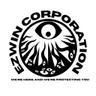
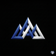
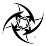

01
QBCore çekirdeği
Oyuncu, iş ve envanter akışlarının üzerine kurulu temel kaynak seti.
FIVEM · KAYNAK PAKETLERİ
QBCore tabanlı FiveM sunucuları için kaynak paketleri: envanterden spawn seçimine, veritabanından yönetim paneline kadar.
Paketler aynı sunucu üzerinde birlikte çalışacak şekilde düzenlenir.
Oyuncu, iş ve envanter akışlarının üzerine kurulu temel kaynak seti.
oxmysql ile veritabanı bağlantısı; sunucu yeniden başlasa da veri yerinde kalır.
PolyZone ile güvenli bölgeler, etkileşim alanları ve tetikleyiciler.
Oyuncuyu haritaya güvenli bir başlangıç noktasından alır.
txAdmin ile konsol, kaynak izleme ve oyuncu yönetimi.
Kurulum ve davranış testleri için ayrı bir test sunucusu.
Sunucu çekirdeği QBCore; veri katmanı oxmysql; bölge kontrolleri PolyZone. Yönetim tarafında txAdmin kullanılır.
Gamebuild 3751 üzerinde çalışan test sunucusu, kurulum ve davranış testleri için ayrı tutulur.
Paketler sunucuya rastgele yüklenmez; sırayla bağlanır ve test edilir.
Sunucu ihtiyacı ve mevcut kaynaklar netleşir.
Paketler sunucuya eklenir; bağımlılıklar sırayla bağlanır.
Kaynaklar test sunucusunda çalıştırılır; hatalar not edilir.
Kurulum notları ve sürüm listesi paylaşılır.
Paket listesi ve sürümler sunucunun ihtiyacına göre değişir. Güncel kapsam, kurulum öncesi Discord üzerinden doğrulanır. Bu site ödeme almaz.
Yedi marka, tek çatı. Her biri kendi kimliğiyle yayında.

EZWIN CorporationÇatı markası EzWin FiveMFiveM kaynak paketleri
EzWin FiveMFiveM kaynak paketleri

EzWin Hesap HizmetleriHesap ve erişim hizmetleri EzWin Site SysSite ve panel sistemleri
EzWin Site SysSite ve panel sistemleri
 EzWin TemplateRoblox şablonları
EzWin TemplateRoblox şablonları
 EzWin UncopylockedUncopylocked sahneler
EzWin UncopylockedUncopylocked sahneler

EzWinCheatLuau test laboratuvarı EzWin PortfolyoTüm işler ve projelerMevcut altyapınızı ve ihtiyacınızı Discord üzerinden paylaşın.